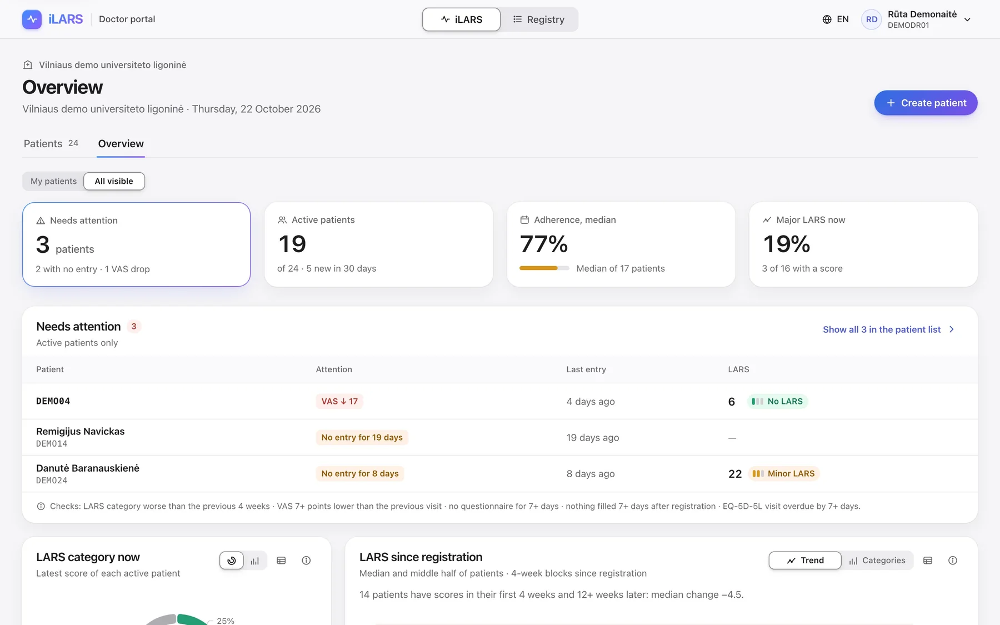
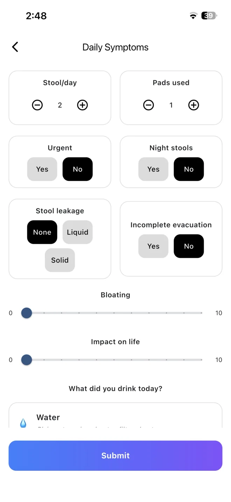
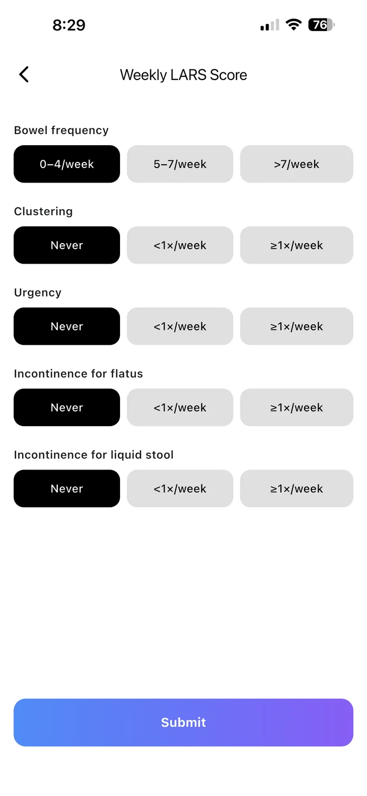
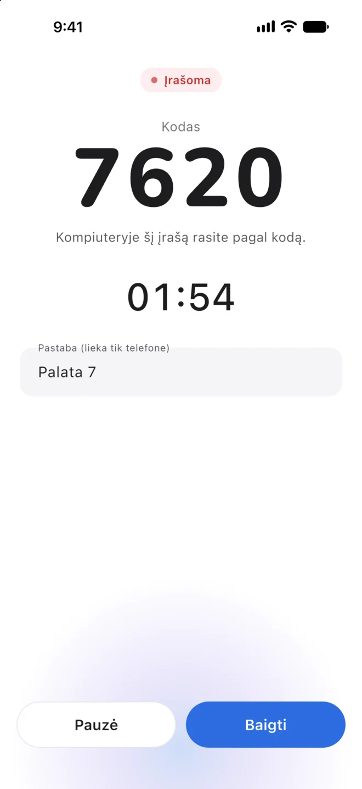
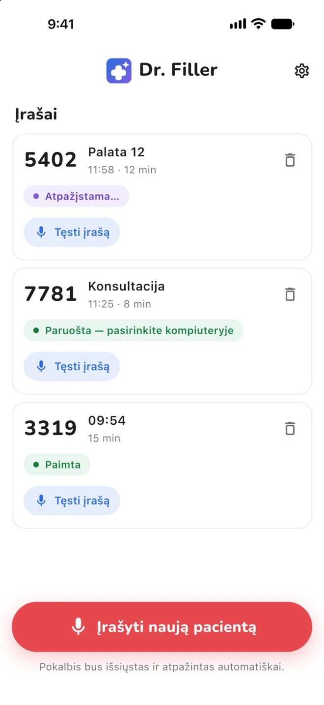
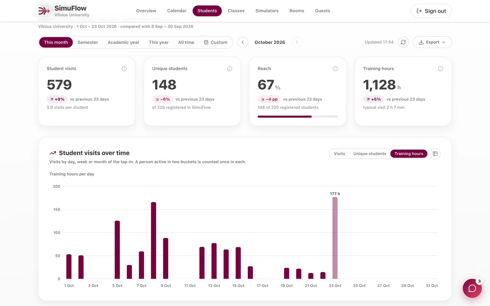
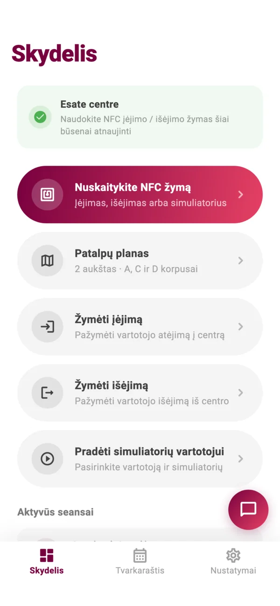
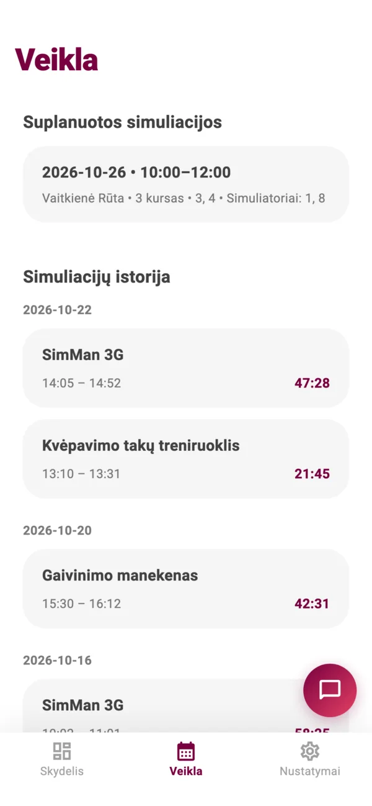
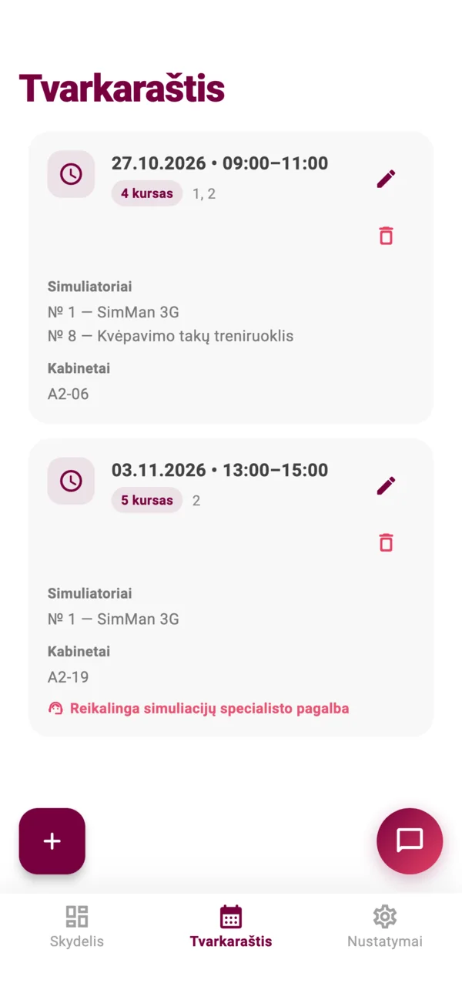

Mažiau rutinos. Daugiau medicinos.
Trys gydytojų sukurti produktai: pacientų stebėsenai po vėžio operacijų, medicininiams dokumentams pildyti ir medicininių simuliacijų centrų darbui.
iLARS
Pacientų stebėsenaKiekviena diena tarp vizitų.
Po tiesiosios žarnos vėžio operacijos daugelis pacientų mėnesių mėnesius gyvena su žarnyno veiklos sutrikimais. Su iLARS jie kas vakarą per dvi minutes pažymi savo simptomus, o gydytojas viename ekrane mato, kaip keičiasi jų būklė ir kam reikia dėmesio.
- Dviejų minučių kasdienė apklausa telefone
- Gydytojo portalas, kuris pažymi blogėjančius rodiklius ir praleistas apklausas
- Dabar plečiamas į nacionalinį kolorektalinio vėžio registrą



Dr. Filler
Medicininiai dokumentaiPakelkite akis į pacientą.
„Chrome“ plėtinys gydytojams Lietuvoje. Jis klauso konsultacijos, perskaito ankstesnius dokumentus ir užpildo vizito įrašą. Gydytojui lieka tik patikrinti ir išsaugoti.
- Užpildo E025 ir E027 formas ir pasiūlo TLK-10 kodus
- Veikia ELI, Foxus, VARUTIS ir ESIS sistemose
- Telefono programėlė įrašo vizitacijas ir perduoda tekstą į kompiuterį


SimuFlow
Simuliacijų centraiMažiau planavimo. Daugiau dėstymo.
Telefono programėlė ir internetinis skydelis kasdieniam medicininių simuliacijų centro darbui: kas yra centre, kas kuriuo simuliatoriumi treniravosi ir kokie užsiėmimai kur suplanuoti.
- Atvykimas pažymimas priglaudus telefoną, o laikas prie simuliatoriaus skaičiuojamas automatiškai
- Užsiėmimų planavimas be dvigubų rezervacijų ir su priminimu likus valandai
- Kasdien naudojamas Vilniaus universiteto Medicininių simuliacijų centre nuo 2026 m. rugsėjo




Norite pamatyti, kaip tai veikia?
Parodysime gyvai arba pradėsime bandomąjį projektą jūsų klinikoje ar centre.
Susisiekite